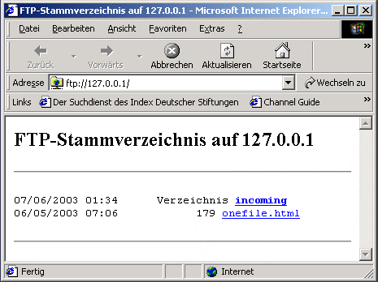
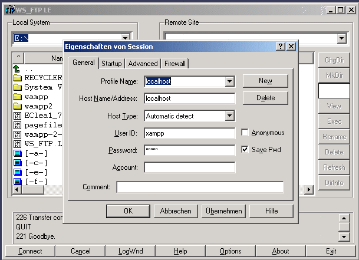

FileZilla FTP Server
Also der Apache ist kein FTP-Server ...
... da er nun einmal das Protokoll HTTP (Hypertext Transfer Protocol) und eben nicht noch FTP (File Transfer Protocol) verwaltet. Also muss einer her!
Ab dir Version 0.9 wird im xampp der freie und über sourceforge.net vertriebene FTP Server "FileZilla FTP" mit geliefert. Die Benutzung von "FileZilla FTP" ist denkbar einfach.
Schritt 1: Einfach die Datei "FileZillaFTP_start.bat" im Hauptverzeichnis des xampp starten. Beim ersten Start wird automatisch eine Beispiel Konfiguration in dem Filezilla Verzeichnis namens "FileZilla Server.xml" erstellt. Der Server wird dann gestartet. Über die "FileZilla Server_example.xml" könnt ihr auch selbst Hand anlegen, sollte etwas schief laufen, vorher umbenennen in "FileZilla Server.xml". Nur wenn was nicht so klappt ..
Schritt 2: Nun könnt ihr "FileZilla FTP" konfigurieren. Nutzt dazu das FileZilla Interface namens "FileZilla Server Interface.exe" im FileZilla-Verzeichnis. Natürlich könnt ihr euch an der Beispielkonfiguration orientieren. Zwei Nutzer wurde in dem Beispiel angelegt:
A: Ein Standardnutzer namens "xampp", Kennwort "wampp". Das Heimatverzeichnis ist \xampp\htdocs.
B: Ein Anonymous User namens "anonymous", kein Kennwort. Das Heimatverzeichnis ist \xampp\anonymous. Kann via Browser mit ftp://127.0.0.1 angesprochen werden. Aber vorher FileZilla starten!
Der FileZilla ist hier erst einmal nur über die Loopback Adresse 127.0.0.1 gebunden, ihr könnt den zu nutzenden IP Addressbereich aber noch über das FileZilla Interface ändern.
Schritt 3: Den FTP Server stoppen mit "FileZillaFTP_stop.bat". Wer den Server als Dienst starten möchte, sollte die Exekute-Datei mal mit Doppelklick auf "FileZillaServer.exe" starten. Dieser fragt dann nach den ganzen Startoptionen.
Bilder:

Die Konfigurationskonsole "FileZilla Server Interface.exe"

Anonymous FTP über den Browser

Mit dem xampp User und WS FTP auf dem Server anmelden (Passwort: wampp)